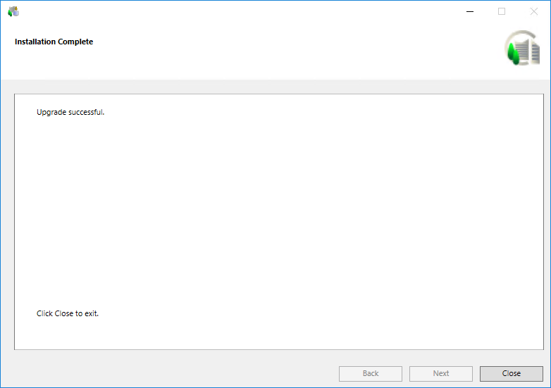

Close the Installation Wizard
- When the installation program is complete, the Upgrade Complete dialog box displays. Click Close to complete the upgrade.
- (Optional) In case of any installation errors, such as failure in installing prerequisite/extension//language pack, click the View Log button to open the log file and view the details of the errors. See Description of Installer Error Codes.

If all the installed extensions are IEC certified, a message "Installation adheres to the IEC 62443-4-2 standard" displays in the Installation Complete dialog box.
A list of all the installed extensions along with their IEC certification status is also present in the installer log present at [System Drive] \[ProgramData]\[Siemens]\GMS\InstallerFramework\GMS_Installer_Log.
- (Optional) If the installation of an extension containing the post-installation steps fails, the execution of the corresponding post-installation steps also skipped and an error message is logged. See Consistency Check Scenarios.

- Desigo CC, along with the existing extensions, language packs, and the prerequisites, is upgraded, and the newly selected extensions and language packs are installed.
New prerequisites required for Desigo CC Version 5.0 are installed. - IIS is installed and configured. Microsoft Application Request Routing (ARR) is also installed, if not already installed. The currently logged in user is added as a member of the IIS_IUSRS group.
The default website deleted from IIS manager and hence does not display in SMC. - The post-installation steps, if enabled, for platform, already installed extensions and for the newly installed extensions are also executed.
It includes upgrading, activating starting the project, upgrading and starting the HDB and the Desigo CC Client application. - (Optional and applicable only for Quality Updates and Hotfixes) The patches for prerequisites, platform, mandatory extensions, and the non-mandatory extensions, as applicable, are upgraded. For any errors during the patch installation, refer (_ELOG) file.